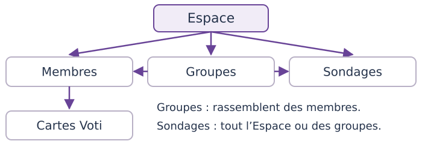
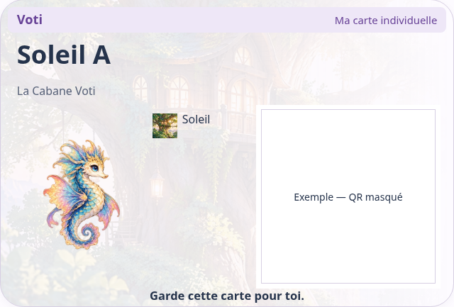
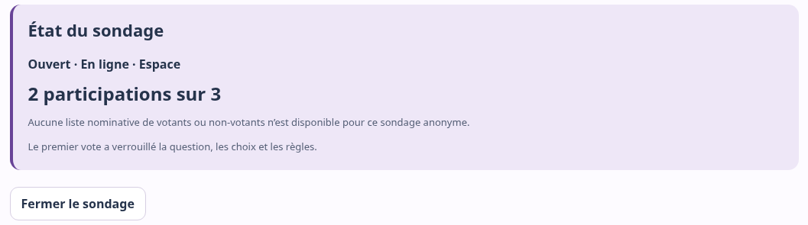
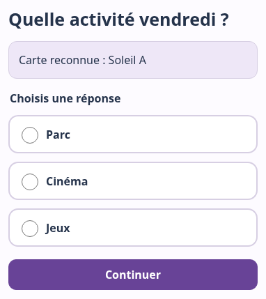
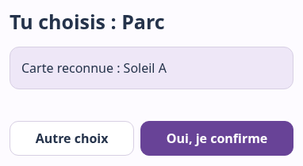

Administrateur
Préparer et gérer l’Espace, les membres, groupes, Cartes et accès ; créer aussi des sondages
Voti permet de participer simplement à des choix ou sondages grâce à des Cartes Voti individuelles : choisir une activité, décider d’une sortie, recueillir un avis ou organiser un choix collectif.

Un membre représente une personne, avec un nom ou pseudonyme. Un groupe rassemble certains membres ; une personne peut appartenir à plusieurs groupes. Un sondage concerne tout l’Espace ou les groupes choisis.
Préparer et gérer l’Espace, les membres, groupes, Cartes et accès ; créer aussi des sondages
Créer et suivre les sondages dans son périmètre autorisé
Utiliser sa Carte pour répondre aux sondages auxquels il peut participer
Ces rôles décrivent ce que chacun peut faire dans Voti. Ils ne dépendent ni de l’âge ni du contexte d’utilisation.
Ouvrez Voti avec Internet. Pour gérer un Espace, choisissez Espaces & groupes : préparation page 2, sondage page 3. Avec une Carte de Participant, utilisez directement la page 4.
Accéder facilement à Voti Voti fonctionne dans le navigateur. Sur un appareil compatible, vous pouvez aussi l’installer pour obtenir une icône et une fenêtre dédiée. Voir Installer Voti dans le guide complet. L’installation ne transfère pas les accès et ne remplace pas Internet.
Pour aller plus loin : Guide Voti — Comprendre et utiliser.
Administrateur : préparez l’Espace. Créateur : demandez à l’Administrateur les membres, le groupe et les Cartes prêts, puis passez page 3 avec votre accès.
Exemple fictif : La Cabane Voti, groupe Soleil, membres Soleil A/B/C.
Dans Espaces & groupes, utilisez Mes Espaces → Ouvrir si l’accès est déjà présent. Sinon, importez le fichier reçu avec Choisir un fichier, ou dépliez Créer un Espace, nommez-le et confirmez la création. Effectuez la vérification humaine si demandée.
Conservez votre accès : Réglages → Exporter mon accès SECRET. Gardez le fichier en privé ; il permet de retrouver vos droits de gestion.
Dans Groupes → Nouveau groupe, saisissez Soleil, puis Créer le groupe. Le préparer avant les membres permet de le cocher dès leur création.
Dans Membres → Ajouter un membre, saisissez Soleil A, cochez Soleil, puis Créer le membre et sa carte. Téléchargez sa Carte. Faites de même pour Soleil B et Soleil C. Une illustration est facultative.
Membre déjà présent ? Voir → groupes → Enregistrer, depuis sa fiche.
Vérifiez pseudonyme et Espace, puis Télécharger cette carte (PDF SECRET). Imprimez si utile et remettez chaque Carte à la bonne personne. Téléchargez avant de recharger ou fermer l’onglet.

Espace, membres, groupes et Cartes se réutilisent pour les prochains sondages. Détails : Membres, Groupes et Cartes Voti.
Administrateur ou Créateur autorisé. Création express : rapide, réglages recommandés. Création guidée : étape par étape. Réglages avancés : tous les réglages réunis.
Le sondage existe ; personne ne peut encore voter.
Les Participants prévus peuvent voter.
Le minimum recommandé Voti l’adapte aux personnes concernées : ici, 3 personnes → minimum 2, ajustable avant publication. Express propose un vote anonyme simple, sans commentaire, avec résultats pour les membres concernés une fois ce minimum atteint.
Dans Sondages → Gérer, lisez état, X participations sur Y et motif près de Résultats. Choisissez Voir les résultats lorsqu’ils sont disponibles. Fermer le sondage, puis confirmer, arrête les votes sans contourner le minimum.

Voir Comprendre les résultats dans le guide complet. Les personnes pouvant voter sont fixées à publication : vérifiez le groupe avant.
Fiche Participant. Prépare ta Carte Voti et le lien ou QR du sondage ouvert. Internet est nécessaire. Ta Carte sert à participer ; garde-la pour toi.


Vérifie ton pseudo avant de répondre. Un seul vote par sondage, même avec une Carte remplacée. Après fermeture, plus de vote. Ton identité temporaire est oubliée après le vote réussi.
Pourquoi les résultats ne sont-ils pas encore visibles ? Les résultats peuvent attendre assez de réponses, la participation de tout le monde ou la fermeture du sondage, selon la règle choisie. Leur consultation doit aussi t’être autorisée. Présente ta Carte si nécessaire : Résultats disponibles apparaît dans Mon espace. Le Guide Voti explique ces règles.
Besoin d’aide ? Demande à la personne responsable de ton Espace, sans partager publiquement ta Carte. Guide complet : participer.